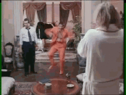
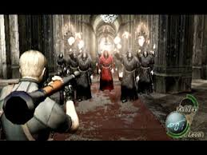

Resident Evil 4
 De: La Frikipedia, la enciclopedia extremadamente seria.
De: La Frikipedia, la enciclopedia extremadamente seria.
De la serie Videojuegos:
Resident Evil 4

| Desarrollado por:
|
capbron y cheat engine game engine
|
| Distribuido por:
|
Tienda de juegos
|
| Diseñado por:
|
Willy Wonka
|
| Motor
|
lamborghini murcielago
|
| Género(s)
|
Terror
|
| Fecha de lanzamiento:
|
4 m en jabalina y 8 en estilo bomba
|
| Modos de juego:
|
Matar pueblerinos inofensivos.
|
| Requisitos:
|
ser unlelo sin vida social y tener una paly station almenos
|
| Disponible en:
|
las tiendas, daaaaaaaa
|
| Formatos:
|
Din A4 y A3
|
| Edades:
|
+74
|
| Puntuaciones:
|
9.5/10/15
|
Tienes miedo ??
 jim carrey despues de pasarse todos los
putos escenarios minijuegos y la historia principal
En este Episodio tendrás el honor de manejar nada más ni nada menos que al genocida con el record de mayor gente asesinada y pariente mas cercano de Bruce Lee: Leon Scott Kennedy (se rumorea que es hermano del presidente de los Estados Hundidos, Jhon F Kennedy, pero el rumor se debe desmentir) el cual se pasea por un pueblo de Europa (España)matando gente trabajadora que solo de le sale una que otra grosería a los cuales les llamaron Ganados, no se sabe por que...
La historia sucede en un pueblo de Europa (aunque está más que claro que es Espiña). Lo que pocos saben es que en realidad el pueblo es el tan temido Sant Jordi...
Personajes
- Lion S. alias c Kennedy: Debe ser pariente de Bruce Lee puesto que a este tío no logran matarlo con nada y sobre vive a 2 títulos de esta saga. Si aturdes a alguien de un disparo, podrás ejecutar su mortal patada giratoria (aunque no tendrá ese efecto devastador de dios). Le gusta ir por hay matando aldeanos trabajadores que no saben ni que mierda quiere. La razon por la que hace esto es por que se fue de vacaciones a España y se compró drogas y armas; se fumó todas las drogas y se fue conduciendo hasta perderse en medio de un bosque con dos travelos disfrazados de mujeres policias de S.TA.R.SS. (esa es su fantasia erotica preferida). Luego llego a casa de un pueblerino, el cual le quisó dar un caluroso abrazo de bienvenida a la villa, pero Lion (influenciadom por las drogas) creyó que lo queria matar y le devolvió el favor.
- Hada Wong: La cual lo ayuda en varias ocasiones(tocando una campana, disparándole en la espalda a enemigos, prestándole su ultra super hyper mega bazooka destrozatodo para así terminar el juego. PD: También puedes matarlo de la forma artesanal y claro en la cama todo depende) Es una mazizorra que conoció Lion en una noche de alcohol Barbilampiña la compañera de genocidio de Lion y de noche.
Engreída Ingrid Hunnigan: O como algunos la llaman Furcigan porque se rumorea de ciertos asuntos en ciertos sitios de mala muerte. Durante toda la aventura, es la secretaria de la misión, la cual excita a Leon con su voz de afroamericana calentona para motivarlo a sobrevivir. Las gafas le dan morbo a Lion, y esta cuando pierde la conexión con Lion, el pobre queda traumatizado y no puede continuar con su cometido... hasta que penetra brutalmente ve a Ashley.
- Ashley Graham:Es la chica del juego que hay que rescatar,la muy pendeja siempre la andan capturando los enemigos.Si la dejas en un lugar alto y apuntas hacia arriba con un arma de mira ella te dirá pervertido y podrás ver sus bragas.Es recomendable porque se te hara una ereccion tan grande que explotara y pulverisara a todos a su alrrededor .Es una
super prostitua señorita a la que le gusta complacer sexualmente a los caballeros.Su funcion es estorbar y hacerte mas dificiles las misiones para disimular que a los creadores les salio cortito el juego.
- El
camello de las plagas buhonero:Es el extraño hombre (se rumorea que podria ser un hermafrodita o el hermano perdido de darth vader) que se dedica a estar en todos sitios para venderte armas sin munición, con su apariencia de violador fumao de anciano agradable. Este personaje se dedica a llamarte "strenger" y a timarte y cagarte, antes de que decidas dispararle con la escopeta (aunque da igual porque siempre revive, en otro lugar, claro). Sus habilidades son llamarte "strenger", timarte, violarte, morir, resucitar en otro lugar y volver a decirte "stranger". Puedes venderle las joyas que los enemigos tienen en sus miserables casas (podrían venderlas ellos mismos) por 3 pesetas y media, ademas de extrañas hierbas (rojas, amarillas y verdes y nadie sabe qué coño hace con toda esa maría, por Dios, le daría un ataque epiléptico nada más mirarlas) y armas, que nadie sabe donde coños mete.
- Luis Sera :Misterioso personaje que nos lo encontramos cuando salio del armario que abrio leon, el cual nos pide
que le metamos la 9mm y una katana en el culo un cigarrillo, pero Leon solo le dijo que tenía los bolsillos vacios. Luis nos ayuda a matar zombis en la casa, y si eres lo suficientemente amable de dispararle, te matara. En todo el juego solo hace dos absurdas apariciones mas, hasta que es analmente penetrado por el moflao ese de seddler y su increible polla hasta que seddler lo mata, hiriendolo mortalmente en la espalda. Se dice que murio, aunque fuentes afirman que el podría ser el buhonero ala, pues no parecía tan drogado cuando se le veía de Luis (sin confirmar).
Enemigos:
- Albert Wesker: Es el mamarrachos del RESIDENT EVIL 1 y Code Veronica pero remasterizado y ahora con 120% mas maldad. Es una copia de Neo, el de Matrix. Se cree que son primos parientes lejanos. Albert Wesker creó Matrix junto con Bill Gates, pero este quedó infestado por el virus, y Wesker salió ganando.Este casi no sale y busca una muestra de las plagas para añadirla a su coleccion(vaya tio mas raro)
Bicho raro Birotes Mendez: EL tipo carismático (irónicamente hablando) que tiene la fuerza de 1000 hombres y 1/2 ademas de poder alargar su espina dorsal a voluntad y sacarse su ojo. Dicen que tiene algún lío con Furcigan, El pobre tipo lleva la responsabilidad de proteger su pueblito llamado pueblo (Es un alcalde llamado alcalde, de un pueblo llamado pueblo que original) de Lion que mata a sus trabajadores habitantes sin motivo aparente.
- Ramón Salazar: Es un maldito enano que matas de un bazocazo. El cual se ríe diabolicamente como Chucky, el muñeco diabólico, es un pederasta veinteañero que secuestra jovencitas para fines insospechados... es una copia de Chucky el Muñeco diabólico, pero con 20 años y traje de antaño.
- Jack Kraucer: El examigo psicópata (de leon)
y antiguo novio que ahora es malo malito y quiere encajarte su poderoso brazo donde le quepa para recordar viejos tiempos, este es una copia de Arnol Chuachenager o más bien conocido como Terminator.
- Osmund alka-Saddser: Es jefe de los "encandilados" un nuevo partido político, secta religiosa y cadena de supermercados que te promete bajar los impuestos, paz eterna si te mueres y vales de despensa y 20 % de dinero electrónico en todas tus compras. Le encanta el ron con whisky acompañado de una pastilla de alka-setzer, y los porros de canela. Es una copia del Lord Sith Sirious de Star Wars y Juan Carlos I.Penetra brutalmente a Luis Sera
- [anadosLas pobres victimas de este genocidio sin sentido.
- Don Jose: Amigo intimo de Don Pepito, es el tipo del publo con 70 hermanos gemelos que te ataca con el hacha y que cuando te ve dice: ¡Te encontre!. Es el encargado de la seccion de hachas y boinas en el supermercado "Los iluminados". Tambien hace las veces de señora de la limpieza cuando Doña Isabel no esta.
- Los normales y campechanos: Aquellos que solo te dan un hachazo, a veces te lo tiran.
- Los demoníacos: los que están desarmados y se van hacia ti y se te agarran al cuello como aliens, en declaraciones científicas posteriores se descubre que dicen algo, que es la formula química del éter, y la única forma de matar a un wombat, pero no se les entiende nada por su acento medio gallego.
- Los galleteros: que te habientan las super mortales, galletas marias.
- Los traga-fuego: los que van con una antorcha (si le disparas en la mano, esta les cae encima, y ya tendremos Ganado a la parrilla). Se rumorea que son los mismos tragafuego de los cruceros.
- Dr.Chavita:Era el cirujano plástico mas reconocido de todo el pueblo, y el único. Celebre por practicar sus operaciones con una motosierra y un saco de patatas en la cabeza Este tipo practica bigamia al tener dos novias con las que se iba a casar, puesto que les arruinó el rostro en una cirujía. Ahora trabaja de leñador y en la cadena de supermercados medio tiempo en el departamento de ferreteria.Lo recomendable es darle con escopeta pero tu se
jilipollas macho y dale con la pistola o con el cuchillo para mas posibilidades de muerte habilidad
- Las hermanas bellas:Son las feas prometidas del dr. Chavita, las muy hijas de p... Se les arruino el rostro en la fallida operación de busto que les iba a practicar el dr. chavita; pero este se emocionó de más y les partió la cara, se la vendaron, en el juicio después de dos noches de pasión con el doctor Chavita aseguraron "y nadie tuvo la culpa". Ambas se vengarán de Lion por matar en dos ocasiones (si, dos. Quien sabe como pero revive) a su prometido Chava. Los demás del pueblo aseguran, es gay.Aunque bien que cuando pasas cerca de ellas le miran el culo a Leon .
- Plagas:Estas cosas raras son lo que le se sale a un ganado si le vuelas la cabeza,algunos tipos de ellas son muy cabronas y te comen la cabeza, pueden ser matadas con lucecitas o con una patada giratoria.Hay tres clases
- Las Plagas ventriculares: las que se suponen que son órganos, y les sale una cuchilla de la nada.Te saca 2/3 de la barra con un golpe
- Las Plagas hormiga sin cara: ten cuidado,te comen la cabeza de un bocao.
- Las Plagas arañas: uf, a estas ni agua, tu mátalas, que saldrán de la cabeza del portador
- El monstruo del lago:Es un bicho acuático que hay en lago. Esta tierna y grácil criaturita se creó cuando Dios se acostó con la esposa de Willy la ballena. No puedes matarle mas que con simples arpones, mide mas de 10 metros de largo, que se dice pronto. sus ataques consisten en: tirarte del bote y/o matarte del aliento.Es una copia del monstruo del lago Ness.
- El Gigante:Es un extra de la famosa película de peter jackson, el señor de los anillos al cual lo echaron por ser malo re malo y darle de ostias a perritos zalameros. Le encanta coger árboles y estampártelos en la cara y tambien agarrar rocas y jugar a los bolos contigo.
- Monjes tibetanos: Estos extraños y psicodélicos seres deambulan por el castillo y cuando te ven van corriendo hacia tí para fines insospechados. Pertenecen a la secta suicida que van corriendo creyendo que morir es vivir. estos monjes, son debiluchos, y lo único que intentan hacer es intentar convencerte de que morir y vivir son sinónimos. Dalai Lama es el cabecilla de la secta (después de Saddler y Salazar)... , hay de varios tipos, cada uno con una equipación determinada:
 suprise madfaka!!llego el lanza
consoladorescohetes
- Los normales: Con una maza, te atizan de lo lindo.
- los cortajamones :llevan una guadaña cuidado que quitan el doble que los otros
- Los cagaos: los que tienen un escudo de madera, este puede tener pinchos.
- Los engañados: Son aquellos que tienen 2 cuernos como cabras montesas porque sus esposas los engañaron (seguro se preguntaran, y porque me tienen que matar a mi) llevan creo un mazo. Van vestidos de rojo.
- Los galleteros suicidas: Los que más fastidian ya que tienen una puntería extraordinaria, y sus flechas van con fuego.
- Colmillos:Son unos perritos de Saddler que tienen látigos que le salen del lomo, se aconseja aturdirlos con una salchicha podrida o con impactrueno. Son una copia exacta de Rex el perro policía.
- Los engañados 2: son conocidos por ir vestidos como monjes. su español es muy simple "Morir es vivir,Morir es vivir, Morir es
follar vivr" hasta que le metes un tiro con la escopeta, le arrancas la cabeza y , simplemente, se deshace en el suelo.
- Garradores:son unos batos con garras al estilo wolverien de los hombres X pero estos se les olvidaron las garras y con algo de comezon se quedaron ciegos los muy torpes, atacan al primer sonido que oigan (así perdieron a sus padres) podrían ser sus aliados, una anciana, un niño, a Zalasar, etc.la única forma de mataotas de auto-suicidarse rlos es disparándoles en la espalda o si eres Bruce Lee (y no lo eres) una patada y ya.
- Los verdugeros Los guarruras de Salazar, hijos de flash,primos de alien (por la cola q tiene), corredores olímpicos y trabajadores del super los encandilados en el departamento de zapatería y deportes. Estos se crearon a partir de la mezcla de esteroides y las plagas.Nada tu no gastes municion en ellos y tumba los tanques nitrogeno liquido y con el lanzacohetes
- Los verduleros Son los encargados de la sección de verduras del supermercado en el castillo de alka-Saddler. No aparece ninguno en el juego porque son propicios al suicidio en masa colectivo y fueron soltados en un barrio emo-pijo, por lo que se pusieron hasta las botas de auto-suicidarse con otros emos y/o pijos. Son iguales en apariencia a los verdugueros salvo porque llevan un flequillo-tapa-ojos estilo emo y una camiseta en la que pone en letras rojas: MAESTROS DEL SUICIDIO.
- Armaduras:Son armaduras que están poseidas con las plagas,las muy cabronas te persiguen a donde sea. Son una copia de las armaduras de Harry Potter, si si, las del ajedrez.extra: si las matas a cuchillazos, que te acompañara por el resto de la aventura matando a todos.
- Los Soldados de LA ISLA: Hay de varios tipos, son los más coñazos...:
- Los electrificantes: Son los que llevan como arma una pistola que da calambrazos.son los que mas cabrean cuando te dan
- Los ballesteros: Los que te tiran flechas.son los mas cabrones
- Los M&M`s: Estos son tipo Arnol Chauchenager y Terminator, tienen una Gun Ametralladora de 12 cañones, con disparos de 340 balas por minuto.
- Los Semigigantes: Estos (los odio) son unos hombretones con casi todo el cuerpo cubierto por una armadura, solo tienen un punto flaco, la cabeza. Estos van corriendo hacia ti como si de un toro manso en celo se tratase, y te quitan más del 80% de vida.
- Novistadors:Son unos bichos mutantes feos,que te arrojan ácido para derretir tu cara. Viven en las alcantarillas, y son invisibles, así que... cuidadín. Estos... son únicos.huye o busca un rincon
- Regenerators: Los seres más temidos del juego, ya que si no tienes un rifle de francotirador y una mira de rifle de infrarrojos, te puedes dar por muerto, le puedes reventar los brazos, las piernas, y la cabeza si me apuras, pero dará igual, porque irán de todas formas hacia ti, arrastrándose y se daran un festin con tu yugular o te "abrazaran". Solo son posibles de derrotar haciendo que escuchen lo último de Tamara o disparándoles en los puntos débiles. Estos también son únicos.lo normal es salir corriendo pero si quieres demostrar lo
subnormal habilidoso que eres la escopeta y la magnum es lo unico que les para
- iron maiden(no confundir con el grupo de metal):son unos regeneradores que tienen espinas en todo el cuerpo(repito en todo)y tienes que matarlos de la misma forma que los regenerators,ir a abrazarlo y pegarle una mina explosiva en el
ano pecho.
- U3ros:Esta cosa es de las mas raras del juego.Es la mezcla zoofilica entre un humano, una cucaracha y una sandijuela.Le encanta mirarte, juagar a atrapame si puedes´´ (el maricon simpre se va arriba de la jaula) y a ``te corto las piernas´´.
Historia
El pueblo
Han secuestrado a la alcohólica hija del presidente de los Estados Hundidos para sobornarlo (como si nadie lo hubiera querido hacer antes). Lion Kennedy tiene como misión ir el, y 2 travelos de mierda a vintitres pesetas la sesion a por la chiquilla, se cree que la han drogado (o no) y están practicando el adulterio con ella.
Al llegar los dos travelos se quedan escuchando flamenco en el 4 por 4 (16) pues el puto vaquero no les quiere pagar la faena hasta que vuelva de su sangriena orgia de frikis (benditos sean esos diablillos), total, Lion llega a una casa, se encuentra a un pueblerino, que le da la una calurosa vienbenida con un hacha y un "largate de aquí cabrón!!".
Lion no tiene más remedio que pegarle 3 tiros y decirle a Furcigan que lo ha
penetrado neutralizado. Se escucha un camión, se oyen gritos, los 2 travestis han muerto al caer al vacío. Lion sigue y entra en un extraño pueblo, con extraños pueblerinos realizando extrañas tareas pueblerinas. Total, le dan otra calurosa Vienbenida, Lion huye a una casa, empiezan a acosarlo, suena una motosierra, y tachán!, suena una campana y todos se van a la "orgia" de la secta. Te vas hacia una casa donde aparece el alcalde alcalde( son hiperoriginales) Ada se lo folla lo ataca y te vas a tomar por culo en una casa llena de joyas (que ese piojoso robó del miserable pueblo)
Después Lion va a una iglesia de una secta suicida que piensa que morir es vivir, por el camino se encuentra una granja y a un catetillo melenudo, de cuyo nombre no me acuerdo, en la iglesia se encuentra al Lord alka-Saddser, al parecer ahí se encuentra Ashley, la saca,la folla , se van,la folla, más tarde la pierde,la vuelve a follar, aparece un inofensivo gigante, bla blaa bla bla.
Finalmente te metes en un rancho de mierda donde el alcalde se convierte en un Bicho Raro que requiere 137359572985789023740239583486346949405949483490583906839068989096483685698548 tiros para matarlo, se le cae un ojo (como al tío ese de Harry Potter) y lo usas para abrir la puerta al castillo.
El Castillo
El castillo, la etapa más... más odiosa de todas, cuando llegas con Ashley, todo el pueblo te persigue pero el puente levadizo les impide entrar, y Lion y Ashley están a salvo... o no...
Allí al parecer conviven una comunidad de monjes tibetanos con el virus en su sangre, están endemoniados hasta la médula, van deambulando sin cesar por todo el castillo, y sus únicos objetivos son la paz, la armonía, hacerse la paja, matar a cualquier intruso y conquistar el universo.
Allí Lion se encuentra de todo un poco, armaduras locas, monjes locos, bichos invisibles locos,y una prostituta de rojo loca, etc.
Total, al final se enfrenta a Salazar (el enano endemoniado por el picante en su culo), este se transforma en algo así.. como.. un monstruo de 30 metros de alto , unos brazos de ancho como un oleoducto que te golpean,un gran tumor , y en medio... ¡TACHÁN! una lustrosa polla gigante. pero es fácil, coges el lanzacohetes y yastá!.
La isla
Bien, aquí por lo visto hay unos militares flacos con bastante arsenal como para destruir una ciudad entera.
Allí es donde muere el camino del Elegido, Lion entra en unas minas, se carga todo lo que pilla, se monta en una vagoneta de un parque de atracciones, se enfrenta a un par de gigantes, rescata a Ashley por enésima vez, se la tira otra vez antes de que la vuelvan a secuestrar, la vuelven a secuestrar, se enfrenta a Krauser (que es dificilísimo y al final con la ayuda de un helicóptero apache, se abre camino hasta llegar a una refinería donde se encuentra el Lord Sith Saddler, este se transforma en un bicho muy raro con 8 patas vibradoras, cuyo principal y más poderoso ataque es empalarte por el culo bien fuerte (aunque si eres un guarrón maricosexual quizás te dé gustillo...) Ada te lanza un lanzamisiles, se lo tiras al Saddler, FIN. No ha habido ninguna baja civil ni militar xD o al menos eso ocultan...
Al final Lion y Ashley se largan en una moto de agua, la Isla explota (como siempre tiene que explotar algo), y ahora solo les esperan 23 días de viaje por el mar hasta llegar a EE.UU. ¿de donde sacan el combustible?
Frases célebres
- "Leon now"!!!(traducido:leon vete
a la mierda,ada diciendole a leon que se marche)
- "Auauuauuuuuuu"(Leon despues de morir, al menos que te corten la cabeza)
- "¡Mierda!"(pueblerino antes de ser asesinado por el gigante hermafrodito)
- "¡¡Mátalo!!"(Monje)
- "Cogedlo, cogedlo, cogedlo!(monjes jugando al pilla-pilla
con la putita con Ashley)
- "¡¡Está ahí!!"(pueblerino)
- "Aghhh..." (Todos)
- "¡¡Iiiiiaaaaaa!!"(La loca de la motosierra
con su marido al atacarte)
- "MUAHAHAHAHAHA" (Salazar)
- "Aficionados..." (Lion)
- "¡¡Detrás tuya, imbécil!!" (Pueblerinos)
- "¡¡Detrás de tí, imbécil!!" (variante)
- "¡Está en la trampa!" (Pueblerinos al meterte en el silo de estiercol)
- "¡Te encontre!" (Pueblerino antes
de violarte de matarte)
- "Míraloo, está heridooo" (pueblerinos)
- "Morir es vivir,morir es vivir" (los monjes haciendo que te cabrees escuchando esa porqueria de oraciones y para que les dispares con el lanzacohetes)
- "Yaweeeeeeey,este pendejo de alla" (edgar)
- "Pues déjame llenarte la cabeza de vida" (Yo)
- "AAAAGHHHH.... AAAGHHHHH" (Hermanas Bellas)
- "Gñiiiii gñiiiii" (Bichos de las alcantarillas invisibles)
- "hhhmmm.....hhhhhmmm... (respiración rara)" (Regeneradores)
- "Ahí está" (pueblerino)
- "Ahí ta" (monje que se puso blanco del susto)
- "El forasteroooo" (pueblerino veindote al principio)
- "Avisad a los demas" (Don Esteban)
- "te veré luego"Ada despidiendose de Lion despues de dejarlo excitado y con su "amiguito" activado
- "mrhirshvivirsh"(inentendible, se piensa que lo que dicen es la formula química de la cura contra el cáncer) (Monjes)
- "¡Lion!! ¡¡heeelp!! (traducido: Lion, ayudame porfi)" (Ashley todo el santísimo juego)
- "¡¡Lion!! (Ashley)
- "¡¡¡Ashleeyyyyyy!!!" (Lion)
- "¡¡Diox mio, han matado a Seraa!! ¡¡¡¡¡Hijos de putaaaaa!!!!!" (lion cuando ve al pobre Luis Sera
penetrado mortalmente por el esternón, que por ahi le gusta a sadler atravesado por un sospechoso brazo que le sale de debajo de la túnica a sadler)
- "argh es la perra del traje rojo" Jack Kancer sobre la zo...Ada Wong
- "Grrr.... grrr... AAgh... Grrr..." (Garrador)
- "tengo comezon en los ojos" (garrador antes de quedar ciego)
- "Muere, muere, muere..."(monje)
- "Mierda, ya me ha matao ese gilipollas"( IP anónima al jugar al resident)
- "Idiota, si estas detrás mio aprovecha para matarme, no te anuncies BRUAHAHAHAHAA
- "Jaja pendejo!" hermanastro de IP anónima al ver como lo masacraban
- "JAJAJA doblemente pendejo pendejo" IP anónima al ver a su carnalastro morir mas rapido
¡¡¡¡YAAAAAAAAAHHH!!!!...RIP" (Yo haciéndome el enterado, justo antes de recibir la visita de el Dr. Esparadrapo)
- "¡¡¡Muere muere muere!!! (Yo
matando realizando una operacion quirúrgica con el cirujano cachondo con motosierra y saco de patatas)
- "Malditos cabronazos!!! sus vais a enterar!!" (Yo, superenviciado)
- "mierda....." (Tu al quedarte sin munición)
- "Jodete jodete jodete" (Tu al querer matar al wey ese de la sierra)
- "que apaga esa mierda'e consola que te la voy a coger y a dar de ostias contra el piso, joder!!!!!" (mi madre, tras una larga rutina de resident evil 4)
- Creo que ya han vivido demasiado... (Ramon Salazar detras tuyo cuando te has pasado el 75% del juego en un dia, con tu hermanito sentado al lado tuyo mirando y admirando como juegas )
- limpio como una pantera(mike antes de que lo maten)
- Come here, stranger......(el buhonero mintiendote para violarte y/o timarte)
Asignament Ada: En este juego controlas a Ada wong,para robar 5 muestras de semen VIAGRA de Bruce Lee que se robo Alka- Sadler de la su casa.(Mejor que Dios no se entere)
The mercenaries:Este mini juego solo tienes matar a todo lo que se te ponga en el camino. Al principio te salen los enemigos más débiles y mas inofensivos... después... echan a las fieras...
Los personajes disponibles son:
Leon scott Kenedy :Armado con una Pipa con opio y una Jescopeta y una gran Polla
Ada Wong: La protagonista femenina del juego principal solo que con un traje diferente, más sexi todavía con el que distrae a los enemigos para darles un tiro por el cráneo... si...mmm... como a mi y a Lion y a toda la población masculina del mundo nos gusta.
JACK KANCER:Este personaje es mas cabrón porque puede mutar su brazo para matar a cualquier enemigo. Se quedó con el arco de Chubaka (el peluo de Star Wors) y ahora solo lanza inofensivos dardos explosivos... u_u
Hunk:Este es uno de los personajes de Resident Evil,desconozco porque salió aquí. Tiene una metralleta y granadas maduras.Si pulsas A,Abajo,B,X,Z, y L(trangulo, cuadrado, redondel, ekis, uve doble y eme en la version de la paly statión) a la vez te chupara la sangre del celebro o te partirá los huevos brazos, según se presente la ocasión.
Albert Wesker: Este es el que tiene el armamento mas chingón, y al parecer los esteroides le han dado fuerza porque puede hacer volar a los enemigos con un puñetazo.
IP anónima: Lo consigues con dispararle una vez a cualquier enemigo con cualquier arma en cualquier modo. Es el mas debil de todos y lo matrtan con que le rose una flecha por la mejilla. Lo agregaron por lástima, pero ya estuvo bueno, por mi que se muera...
Separate Ways: En este minijuego sale en todas las versiones de resident evil 4 menos en la gamecube, por que a los de Capcom se les ocurrio despues de sacarlo para gamecube. Tiene 5 misiones en las que pasas por donde Leon, le vas ayudando, y al final obtienes como recompensa un arma nueva de la época de los dinosaurios, 5 horas perdidas y sexo con leon en una de las islas para que disfrutes, joto.
Todas Algunas Armas de Lion
Pistola :Es el arma inicial, que como siempre debe ser la mas horrible y debil del juego. Para matar a un pueblerino con esta arma necesitas gastar 10 cargadores enteros(que conste que el arma esta al maximo nivel, sino los cargadores serian mucha mayor cantidad) y cada vez que le den dos balas en la cara decir: ¡ZAS! en toda la boca y correr a pegarle una patada revientahuevos que no hace una mierda porque al principio leon es una puta aprosubadez de agente que sólo sabe pegarte con el bolso, pero si te fumas una convinación de hiervas amarilla, roja, amarilla(viva España) añil, mierda pinchada en un palo, sabo o lefa en un pañuelo de los mocos, marihuana y oregano, podras ejecutar tu gran movimiento del súplex rompechavetas, que te rompe la chaveta( en espanish, cabeza).
Cuchillo:En todas las entregas el arma masssssssssssss fuerte del juego aunque aqui si mata es como combatir a arañazos
Huevo :Es posiblemente el arma mas utilizada del juego, devido a su eficacia en combate y precision (Nota: Si eres lo suficientemente imbecil de haberte molestado en leer esto y probar si realmente el huevo era tan bueno, ¡Enhorabuena, eres un noob!
Castigadora :Es la misma cagada pero con distinto nombre. El nombre lo ideo un idiota que se cree satanico llamadoMarilyn Manson michael jackson por ser el arma que usa para amputarse dedos del pie y volver a pegarselos con pegamento barato.
Rojo 9 :Es un arma que la compras al principio y te resulta una cagada porque cuando recargas ya los ganados te violaron te mataron, cavaste tu tumba y para colmo te das cuenta que te quedaste sin balas. Te puedes comprar un accesorio que solo te quita puntos. Sin embrago, para usar balas de pistola pueeeede... PUEEEDE servirte.
Black Tail :(Culo Negro) Pistola pokevolucionada con piedrusco culo(oviamente sin efecto alguno) que puede A VECES llegar a repartir buena matarile por su efecto de revienta-cabezas-campesinas pero (oh!! sorpresa) debes gastar quichicientos cargadores en un solo malparido jefe para poder bajarle al menos su puta mitad de barra vital. Aclaremos que tambien es util contra Emos.
TMP :Esta arma para manejarla bien es necesario comprar el accesorio que da mas estabilidad, porque sino es como apuntar parado sobre una pelota playera. Es efectiva hasta que hay que enfrentarse a Lord Sadler, que le rompe el traste al que se le cruce por el camino sin dudarlo, y el arma es totalmente inefectiva. Es como si le dispararas a una pared
Escopeta:Tiene la cualidad de apartar de un disparo a un grupo de enemigos y........sí ahi se acabo su funcion
Lanza cuetes :Esta es al arma mas potente del juego. Lo malo es que, como todas las putas buenas armas de los juegos, trae un solo puto cohete de mierda que no te sirve de una carajo porque siempre matas a un solo puto grupito de pueblerinos y luego quedas con una bronca tan grande que podes llegar a romper hasta la misma playstation 2 o la consola en la que estes jugando (que quede claro que tambien se puede consegui una infinita que es mas jodido que esquivar un hiperrayo de la rata amarilla, aunque ya cuando acabaste el juego, así que no sé para que carajo quieren que se use)
Stryker:La unica escopeta decente pero ¡¡sorpresa !! cuando lo puedas comprar como un capullo habras trucado las otras dos
Arma Antidisturbios :Es una escopeta que recibe ese nombre porque esta arma es una de la pocas que puede matar a 5 o 6 pueblerinos al mismo tienpo (esto depende de la punteria). Es efectiva y mucho ya permite alcanzar altos niveles de muerte en el juego, pero deja de serlo cuando llega el mal parido de Sadler (ya le empece a agrrar bronca al cabrio este).
P.R.L. 412 :(Puto Racista Lion) Esta arma queda desbloqueada al terminar el juego en dificultad Pro, cosa que solo puedes hacer utilizando a Cyber Jesús para exorcisar a los ganados y demás enemigos que contengan las plagas, a diferencia del Caño de Mano, el mercader te la da gratis (eso es lo que dice Lion, parece ser que el pago que le ofrecio fue censurado en el videojuego) y no necesita mejoras, además de que vence a cualquier enemigo de un solo disparo. No es más que el rayo que usa Saddler para curarse la plaga cuando ya le da mucha comezón.
MagnumLa clasica pistola ultrapotente cuya municion solo se encuentra cada 400 km
Caño de mano : Es un arma ke a menos de que hackees el juego o seas un friki ultraresuper viciado a este juego y de mercenaaries no la vas a ver. Tampoco intentes consegirla, yo me rompi los dedos de una mano para consegirla y apenas llegue a 8 persona/lugar con 5 estrellas. Si la consogues ademas necesitas otro millon para trucarla (A menos de que quieras tener solo 3 balas)(otro millon, como si conseguirla fuese taaan facil). Aparte, dispararás y lo mas probable es que te mueras al usarla, solo Dios puede empuñarla (Lion capas se le acerca)
Lanzaminas: arma de mierda que viene a sustituir al lanzagranadas(de ahi el nombre)que no sirve de nada pues las minas (sí, explotan lo has adivinado)explotan 2345673 millones de años de haberlas lanzado por lo que tienes que disparar cuando el objetivo esta a 80000 m o ya puedes darte por muerto
Chicago Typewriter(Consolador Chicago): una superametralladora con potencia de escopeta con la que basta un tiro para volarle la cabeza a esos jilis claro es desbloqueable y despues de desbloquearla ¡¡¡ a vender hasta los gayumbos !!! para comprarla lo unico bueno de este arma es la opcion chulito de playa, con la que te puedes ajustar el sombrero 3 veces antes de que Lion recuerde como lanzar el sombrero hacia arriba para que en lugar de decir "ohh, que bonito" te maten mientras lanzas el sombrerito
Enlaces externos
Video de las bragas de Ashley
El mensaje original de los iluminados de Camilo sexto
|
|
 Shooter Shooter
 Terror Terror
 Velocidad Velocidad
 Rol Rol
 Estrategia Estrategia
 Aventuras Aventuras
 Fight! Fight!
 Clásicos Clásicos
 Deportivos Deportivos
 Aventura gráfica Aventura gráfica
 Novela visual Novela visual
 Personajes de videojuegos Personajes de videojuegos
|
Autor(es):
- Fordus
- Aque
- Mataformigues
- Alex2610
- Dixser
- El Xarlie
- Gadesx
- Azulejos
- ElInventor
- Setokayba
Frikipedia 2005-2016, Licencia
GFDL 1.2 - Extraído por FrikiLeaks